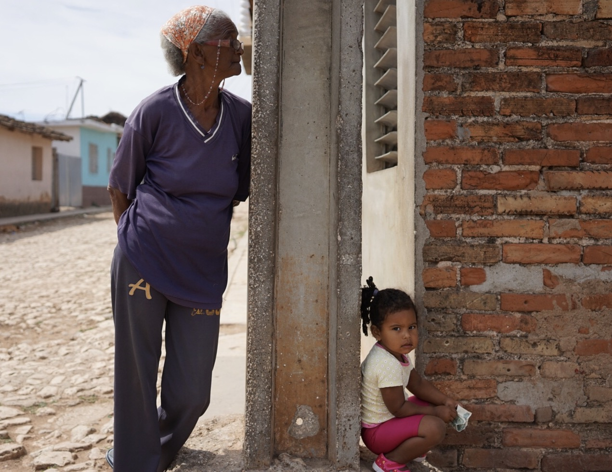
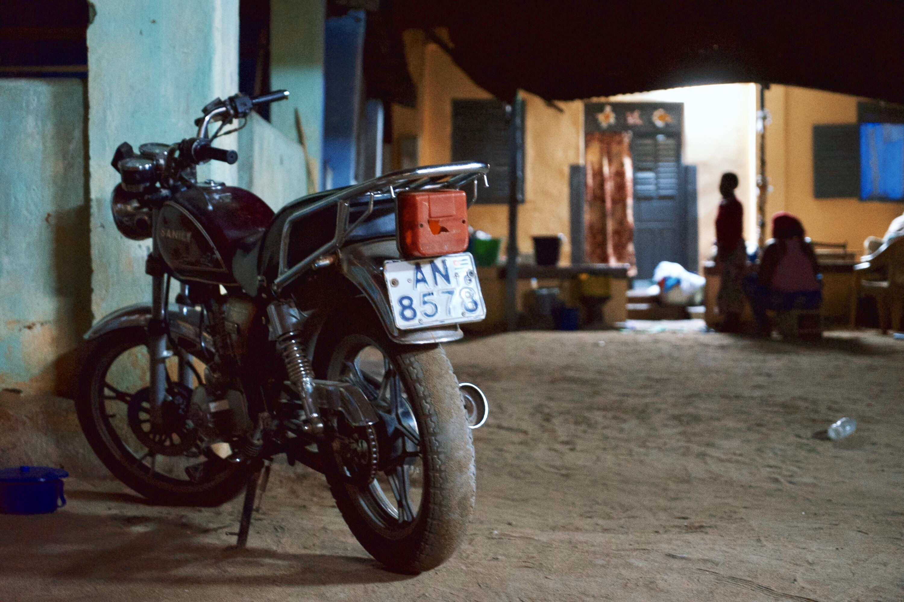
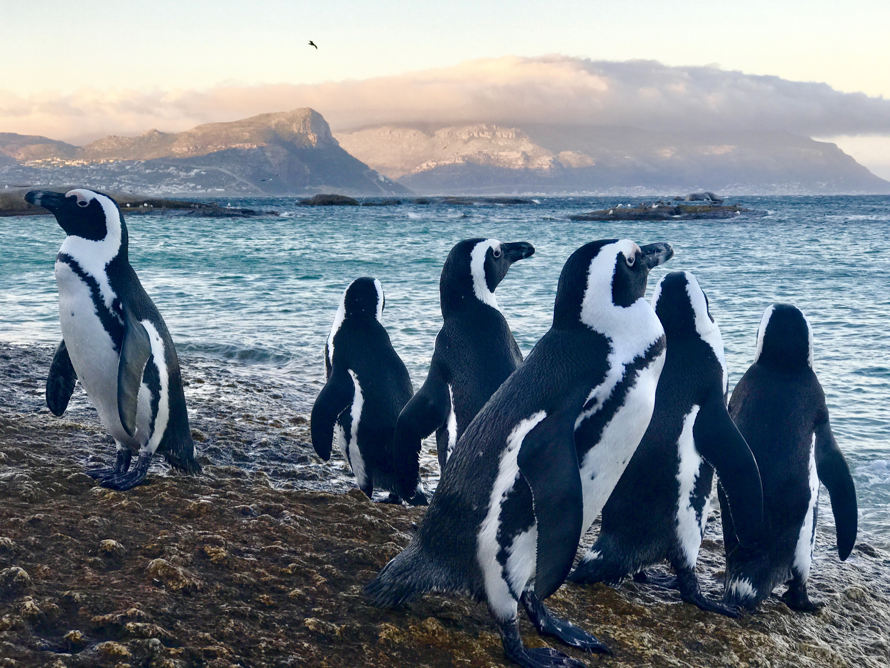
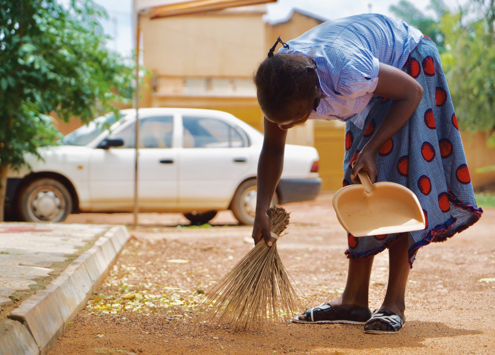

Belize Beach
Beach in Belize vibes!
Fly Girl Mafia
Brand photography of the Fly Girl herself!

Grandmother's Watch
The love of a grandmother captured in Cuba!

The Bike
Evening shot of a lonely motorcycle in Lome, Togo.

The El Camino
American classic!

Penguins
Yes, there are Penguins in Africa.

Morning Routine
The daily, morning routine captured in Burkina Faso.